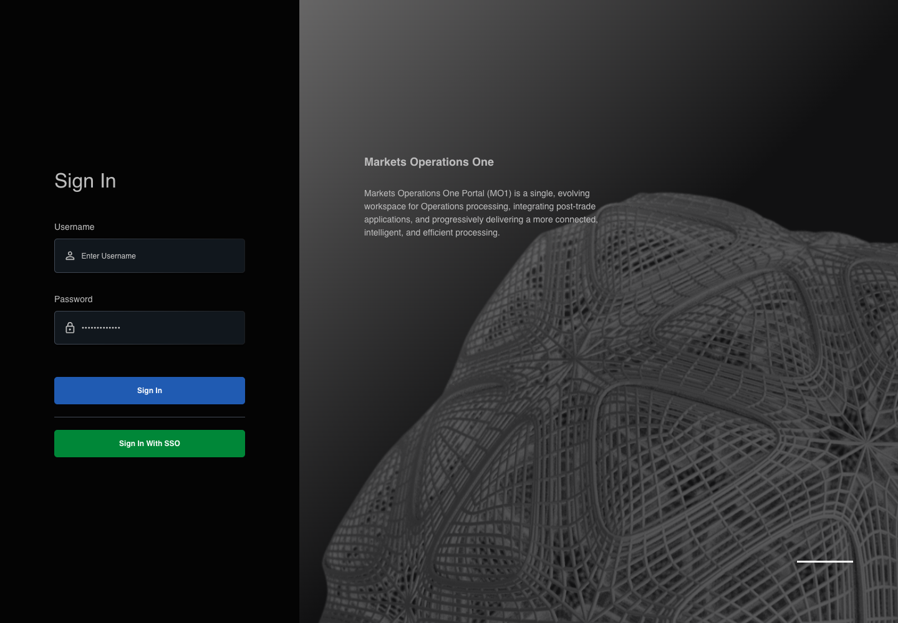

All canonical cases
AUTH-013: Prevent submission with missing username Business acceptance remains unverified. Owner: unknown. Review the canonical definition and fixture limits before acceptance.
Latest local result: PASS Business acceptance: NOT_ESTABLISHED.
The latest local result describes execution. The historical definition review assesses the case design before execution.
Latest step screenshot evidence: COMPLETE . 9/9 canonical steps have execution screenshots.
Canonical Gherkin definition . Definition version: 2. SHA-256: e484edf985f352229f0cbf5d6aa4ed49185a7983607d4e133176f6785d5cbb31.
Historical definition review (preflight): UNVERIFIED A definition review FAIL can coexist with local PASS. The definition failed preflight quality checks.
This historical review does not change the latest execution result. Resolve definition gaps before business acceptance.
Canonical Gherkin steps Feature: Login
@AUTH-013
Scenario: Prevent submission with missing username
Given User A is an entitled fixture user in an isolated browser context with empty browser storage
And the LOCAL login page is visible
When User A clears the textbox with placeholder "Enter Username" on the login page
And User A enters "FixturePass1!" into the text input with placeholder "Enter Password" on the login page
And User A clicks the button labelled "Sign In" on the login page
Then the textbox with placeholder "Enter Username" on the login page is visible
And the text input with placeholder "Enter Password" on the login page is visible
And the button labelled "Sign In" on the login page is visible
And the browser records zero POST requests to "/api/auth/v2/sso/login" Acceptance and evidence limits: NO_COMPLETE_REAL_APPLICATION_BINDING, CANONICAL_REVIEW_OR_EVIDENCE_UNRESOLVED.
Planned essential canonical frames: 2. Plan completeness requires separate review.
Latest attempt AUTH-013 actual React canonical steps PASS · application/run-050/auth-013-actual-react-canonical-steps-525304b57429-attempt-1 · ACTUAL_APPLICATION_LOCAL_SERVICES
Actual MFE React; controlled login API responses; hostname proxy preserves source environment decisions. No real identity or deployment acceptance.
2026-10-22T06:09:17.802Z to 2026-10-22T06:09:23.174Z
Assertions and result · Artifact manifest · Exact run inputs and source hashes
Result SHA-256: a47850d669c1634dad74ebb6939953f3f716bba946eecdc62dcf289ae73a882d Playwright trace
Machine observations Screenshot capture: CAPTURED. Named frames: 10.
Step screenshot evidence: COMPLETE. 9/9 canonical steps have execution screenshots.
Canonical step timeline Given User A is an entitled fixture user in an isolated browser context with empty browser storage
1. step-01 Visible state after step 1: Given User A is an entitled fixture user in an isolated browser context with empty browser storage
2026-10-22T06:09:18.287Z · 1440×1000cb9c3b8047859412e8abcaed51ad9ecefb4bd820c8849af4992e593d500d1836 And the LOCAL login page is visible
2. step-02 Visible state after step 2: And the LOCAL login page is visible
2026-10-22T06:09:20.035Z · 1440×100099567bb3808af958792a6b38879d848938c08b417fb7dfff75bde75fcbd51a3a When User A clears the textbox with placeholder "Enter Username" on the login page
3. step-03 Visible state after step 3: When User A clears the textbox with placeholder "Enter Username" on the login page
2026-10-22T06:09:20.351Z · 1440×100099567bb3808af958792a6b38879d848938c08b417fb7dfff75bde75fcbd51a3a And User A enters "FixturePass1!" into the text input with placeholder "Enter Password" on the login page
4. step-04 Visible state after step 4: And User A enters "FixturePass1!" into the text input with placeholder "Enter Password" on the login page
2026-10-22T06:09:20.687Z · 1440×10009050e5e608349281e11bd080590ea1c268bbd3ecfc84392f0e1b92e61271a4b8 And User A clicks the button labelled "Sign In" on the login page
5. step-05 Visible state after step 5: And User A clicks the button labelled "Sign In" on the login page
2026-10-22T06:09:21.226Z · 1440×1000c5a11cbfa70ea1a3baf8f7e78ca0aa78517c68a3160fd61fcdc427a5f89a256f Then the textbox with placeholder "Enter Username" on the login page is visible
6. step-06 Visible state after step 6: Then the textbox with placeholder "Enter Username" on the login page is visible
2026-10-22T06:09:21.479Z · 1440×1000c5a11cbfa70ea1a3baf8f7e78ca0aa78517c68a3160fd61fcdc427a5f89a256f And the text input with placeholder "Enter Password" on the login page is visible
7. step-07 Visible state after step 7: And the text input with placeholder "Enter Password" on the login page is visible
2026-10-22T06:09:21.702Z · 1440×1000c5a11cbfa70ea1a3baf8f7e78ca0aa78517c68a3160fd61fcdc427a5f89a256f And the button labelled "Sign In" on the login page is visible
8. step-08 Visible state after step 8: And the button labelled "Sign In" on the login page is visible
2026-10-22T06:09:21.911Z · 1440×1000c5a11cbfa70ea1a3baf8f7e78ca0aa78517c68a3160fd61fcdc427a5f89a256f And the browser records zero POST requests to "/api/auth/v2/sso/login"
9. step-09 Visible state after step 9: And the browser records zero POST requests to "/api/auth/v2/sso/login"
2026-10-22T06:09:22.144Z · 1440×1000c5a11cbfa70ea1a3baf8f7e78ca0aa78517c68a3160fd61fcdc427a5f89a256f Additional named frames 10. final-result The final visible state after the named test assertions.
2026-10-22T06:09:22.552Z · 1440×1000c5a11cbfa70ea1a3baf8f7e78ca0aa78517c68a3160fd61fcdc427a5f89a256f Screenshots establish visible state only. Assertions and traces support functional claims.
Earlier attempt history (2) Earlier attempt PASS (superseded by latest PASS) AUTH-013 actual React canonical steps PASS · application/run-007/auth-013-actual-react-canonical-steps-525304b57429-attempt-1 · ACTUAL_APPLICATION_LOCAL_SERVICES
Actual MFE React; controlled login API responses; hostname proxy preserves source environment decisions. No real identity or deployment acceptance.
2026-10-22T05:15:41.277Z to 2026-10-22T05:15:43.836Z
Assertions and result · Artifact manifest · Exact run inputs and source hashes
Result SHA-256: 719a2ba08cfb841d12ddbfb7428f773442378203be55e382c180b1ea833331a1 Playwright trace
Machine observations Screenshot capture: CAPTURED. Named frames: 10.
Step screenshot evidence: COMPLETE. 9/9 canonical steps have execution screenshots.
Canonical step timeline Given User A is an entitled fixture user in an isolated browser context with empty browser storage
1. step-01 Visible state after step 1: Given User A is an entitled fixture user in an isolated browser context with empty browser storage
2026-10-22T05:15:41.439Z · 1440×1000cb9c3b8047859412e8abcaed51ad9ecefb4bd820c8849af4992e593d500d1836 And the LOCAL login page is visible
2. step-02 Visible state after step 2: And the LOCAL login page is visible
2026-10-22T05:15:41.941Z · 1440×100099567bb3808af958792a6b38879d848938c08b417fb7dfff75bde75fcbd51a3a When User A clears the textbox with placeholder "Enter Username" on the login page
3. step-03 Visible state after step 3: When User A clears the textbox with placeholder "Enter Username" on the login page
2026-10-22T05:15:42.132Z · 1440×100099567bb3808af958792a6b38879d848938c08b417fb7dfff75bde75fcbd51a3a And User A enters "FixturePass1!" into the text input with placeholder "Enter Password" on the login page
4. step-04 Visible state after step 4: And User A enters "FixturePass1!" into the text input with placeholder "Enter Password" on the login page
2026-10-22T05:15:42.294Z · 1440×10009050e5e608349281e11bd080590ea1c268bbd3ecfc84392f0e1b92e61271a4b8 And User A clicks the button labelled "Sign In" on the login page

5. step-05 Visible state after step 5: And User A clicks the button labelled "Sign In" on the login page
2026-10-22T05:15:42.507Z · 1440×10008c7bcbbe30941c32d03909cd241435b2239e3f3a87f1fab4fe53ac96a90620a7 Then the textbox with placeholder "Enter Username" on the login page is visible
6. step-06 Visible state after step 6: Then the textbox with placeholder "Enter Username" on the login page is visible
2026-10-22T05:15:42.754Z · 1440×10008c7bcbbe30941c32d03909cd241435b2239e3f3a87f1fab4fe53ac96a90620a7 And the text input with placeholder "Enter Password" on the login page is visible
7. step-07 Visible state after step 7: And the text input with placeholder "Enter Password" on the login page is visible
2026-10-22T05:15:42.891Z · 1440×10008c7bcbbe30941c32d03909cd241435b2239e3f3a87f1fab4fe53ac96a90620a7 And the button labelled "Sign In" on the login page is visible
8. step-08 Visible state after step 8: And the button labelled "Sign In" on the login page is visible
2026-10-22T05:15:43.024Z · 1440×10008c7bcbbe30941c32d03909cd241435b2239e3f3a87f1fab4fe53ac96a90620a7 And the browser records zero POST requests to "/api/auth/v2/sso/login"
9. step-09 Visible state after step 9: And the browser records zero POST requests to "/api/auth/v2/sso/login"
2026-10-22T05:15:43.153Z · 1440×10008c7bcbbe30941c32d03909cd241435b2239e3f3a87f1fab4fe53ac96a90620a7 Additional named frames 10. final-result The final visible state after the named test assertions.
2026-10-22T05:15:43.387Z · 1440×10008c7bcbbe30941c32d03909cd241435b2239e3f3a87f1fab4fe53ac96a90620a7 Screenshots establish visible state only. Assertions and traces support functional claims.
Earlier attempt PASS (superseded by latest PASS) AUTH-013 actual React prevents incomplete credential submission PASS · application/run-002/auth-013-actual-react-prevents-incomplete-credential-submission-d689a7d43d93-attempt-1 · ACTUAL_APPLICATION_LOCAL_SERVICES
Actual mfe-base React application from the local webpack server. Controlled login API responses; no external identity service.
2026-10-22T04:14:56.722Z to 2026-10-22T04:14:58.214Z
Assertions and result · Artifact manifest · Exact run inputs and source hashes
Result SHA-256: a13d147255a2fd83c1cdc94db3683831918578796b3317c06d8f7f15649adf26 Playwright trace
Machine observations Screenshot capture: CAPTURED. Named frames: 4.
Step screenshot evidence: LEGACY_ESSENTIAL_FRAMES. 0/9 canonical steps have execution screenshots.
Step evidence not recorded.
Canonical step timeline Given User A is an entitled fixture user in an isolated browser context with empty browser storage
No screenshot is recorded for this step. No executed state is claimed.
And the LOCAL login page is visible
No screenshot is recorded for this step. No executed state is claimed.
When User A clears the textbox with placeholder "Enter Username" on the login page
No screenshot is recorded for this step. No executed state is claimed.
And User A enters "FixturePass1!" into the text input with placeholder "Enter Password" on the login page
No screenshot is recorded for this step. No executed state is claimed.
And User A clicks the button labelled "Sign In" on the login page
No screenshot is recorded for this step. No executed state is claimed.
Then the textbox with placeholder "Enter Username" on the login page is visible
No screenshot is recorded for this step. No executed state is claimed.
And the text input with placeholder "Enter Password" on the login page is visible
No screenshot is recorded for this step. No executed state is claimed.
And the button labelled "Sign In" on the login page is visible
No screenshot is recorded for this step. No executed state is claimed.
And the browser records zero POST requests to "/api/auth/v2/sso/login"
No screenshot is recorded for this step. No executed state is claimed.
Additional named frames 1. login-ready The LOCAL login page is visible before credential input.
2026-10-22T04:14:57.536Z · 1440×100099567bb3808af958792a6b38879d848938c08b417fb7dfff75bde75fcbd51a3a 2. input-ready The canonical incomplete input is present before submission.
2026-10-22T04:14:57.670Z · 1440×10009050e5e608349281e11bd080590ea1c268bbd3ecfc84392f0e1b92e61271a4b8 3. submission-prevented The sign-in controls remain visible after the incomplete submission.
2026-10-22T04:14:57.820Z · 1440×1000c5a11cbfa70ea1a3baf8f7e78ca0aa78517c68a3160fd61fcdc427a5f89a256f 4. final-result The final visible state after the named test assertions.
2026-10-22T04:14:58.019Z · 1440×1000c5a11cbfa70ea1a3baf8f7e78ca0aa78517c68a3160fd61fcdc427a5f89a256f Screenshots establish visible state only. Assertions and traces support functional claims.